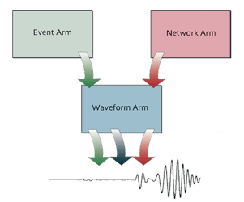
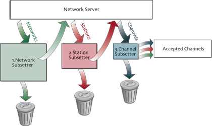
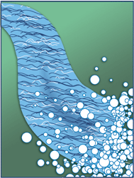
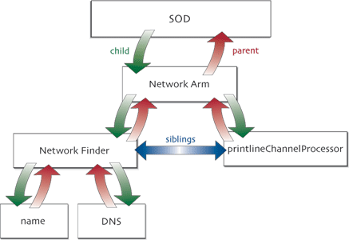
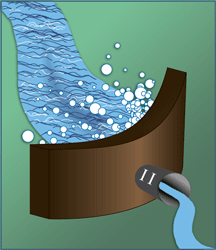
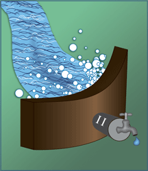

SOD's arm structure

SOD's modus operandi is to retrieve seismograms. To get a seismogram from a remote data center, SOD needs to know its time window and channel (a single recording instrument). This leads to three major activites in SOD called arms:
- Event Arm - gathers earthquakes
- Network Arm - gathers channels
- Waveform Arm - merger events and channels to produce time windows and gathers seismograms
The waveform arm depends on the network and event arms, but the event and network arms can run independently. In this tutorial, we'll run the network arm by itself.
Network arm's structure

The network arm works in 3 steps:
- Network Subsetter - gets seismic networks
- Station Subsetter- gets stations from the accepted networks
- Channel Subsetter - gets channels from the accepted stations
All of the arms in SOD operate like an assembly line. A server is specified as the source of raw materials. Subsetters, like inspectors on the line, check the raw materials for certain qualities. If the material has it, it goes on to the next step down the line. Otherwise, it's tossed out of the system into the reject bin. Finally, if the raw material passes all the subsetters, it makes it into the accepted bin.
In the case of the network arm a network source, often a FDSN Station web service, is specified as the source of raw material. All of the seismic networks in the server are retrieved and inspected by network subsetters. If it or any other subsetter is left out of a recipe, it's as if that inspector fell asleep on the job and all items pass through. For the networks that pass, stations are retrieved from the server and inspected by the station subsetters. Finally, channels are retrieved for passing stations and inspected by the channel subsetters.
A simple SOD recipe
<?xml version="1.0"?> <sod> <networkArm> <fdsnStation/> <printlineChannelProcess/> </networkArm> </sod>

This is the a simple recipe for SOD: it only contains a network arm with a single subsetter.
The <fdsnStation> section of the recipe tells the networkArm to
talk to IRIS DMC's FDSN Station web service to retrieve its data. The IRIS DMC is the
default, but you can configure this to talk to other servers.
<printlineChannelProcessor/>, a special kind of subsetter called a
processor. A processor never rejects anything — it only performs some action
based on the information in it. In this case, the processor prints out the information for
any channel that goes through it.
The lack of any rejecting subsetters mean all channels are retrieved from the DMC and
pass successfully through the arm.
Since there are no subsetters in this recipe, it truly produces a flood of channels. The IRIS Network server contained over 122439 at last count. You really do not want to run this recipe!
XML and SOD recipes
SOD recipes are written in a form of XML, a simple text format. As a user of SOD, you'll need to edit recipes to specify what you want SOD do. There are a few things about XML you should keep in mind to help in editing recipes.
General XML Rules
You can edit XML in a regular text editor because it is a text format. An XML document should always start with a prologue line that specifies the encoding and version. For SOD recipes, just make sure
<?xml version="1.0" ?>
is the first line.
XML Elements
After the prologue, XML documents consist of one or more elements. An element is a
structure in XML that consists of a start tag like <sod>followed by text or other elements,
then an end tag like </sod>. In the recipe above, sod, networkArm,
fdsnStation and printlineChannelProcessor
are elements. Every XML document starts
with a single element called the root element, which contains all the other elements. In this case,
the root element is sod.

Any element with a start tag in another element must have its end tag before the end tag of the
element containing it. This means the elements form a tree structure branching out from the root
element. If an element contains no other elements or text, it can be written as an empty element like
<fdsnStation/>. An element contained in another element is called its
child, the containing element is called a parent, and all children of an element are siblings.
If SOD issues an error message stating that the recipe is not well formed, one of these rules of XML has been violated. Check your file to make sure that all elements are properly nested and that all start tags have matching end tags.
Don't worry about completely understanding all of these terms now. They'll be used throughout the tutorial with other examples that should clarify their meaning.
Adding a network subsetter to the recipe
<?xml version="1.0"?> <sod> <networkArm> <fdsnStation/> <networkCode>II</networkCode> <printlineChannelProcess/> </networkArm> </sod>

This adds a network subsetter to the initial recipe.
The network subsetter
<networkCode> tells SOD to only allow networks with code II to pass through.
This limits the number of channels retrieved by this run to 3490
channels
from the 122439
returned by the run with no subsetters.
Limiting the recipe to broadband channels
<?xml version="1.0"?> <sod> <networkArm> <fdsnStation/> <networkCode>II</networkCode> <bandCode>B</bandCode> <printlineChannelProcess/> </networkArm> </sod>

This adds a channel subsetter to the recipe: <bandCode>B</bandCode>.
This subsetter restricts the channels to be only those with a band code of B (broadband channels).
With the addition of this subsetter, the amount of data has been cut back to
1105
channels.
With the broadband restriction, the run completes in a reasonable amount of time.
To try it, open up a command prompt, make a new directory
networkTutorial, cd into it, and on Unix run
sod -f <path to your sod directory>/recipes/tutorial/network.xml
or on Windows run
sod.bat -f <path to your sod directory>\recipes\tutorial\network.xml
After a few seconds, you should see a line of information printed for all of the broadband channels in II.
 Next: Event Tutorial
Next: Event Tutorial Contact Us
Contact Us